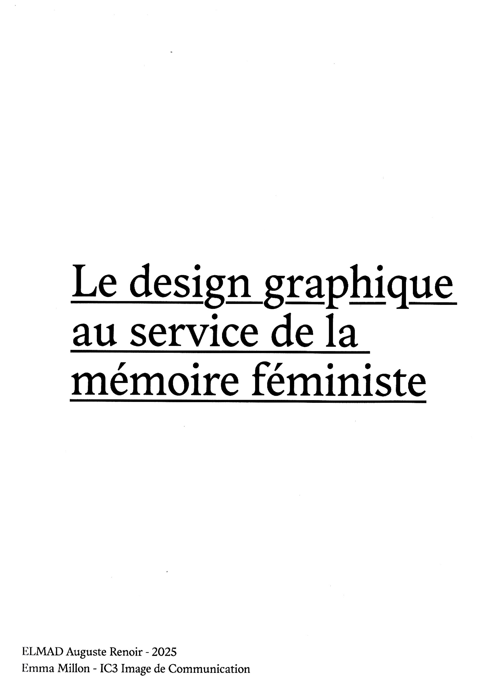
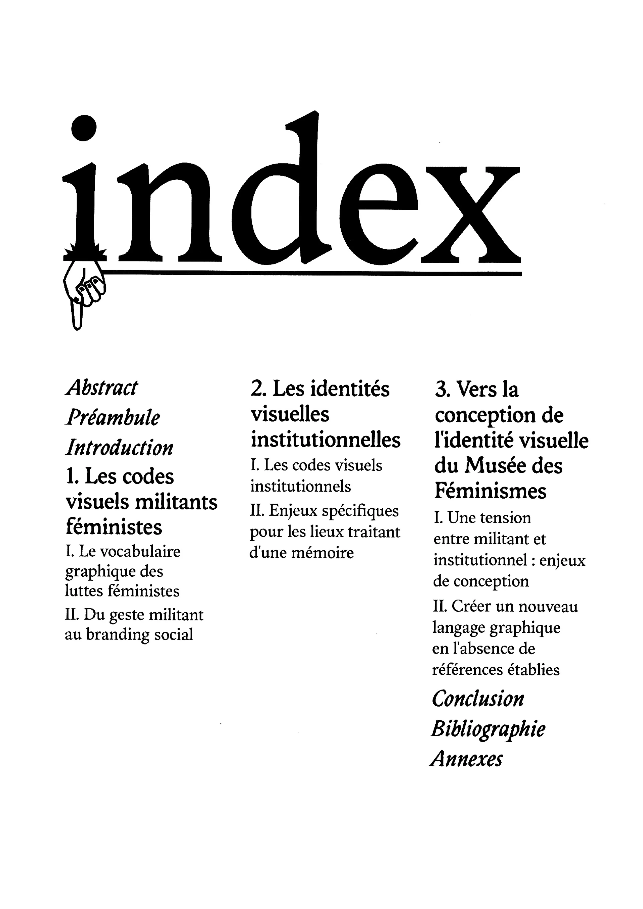
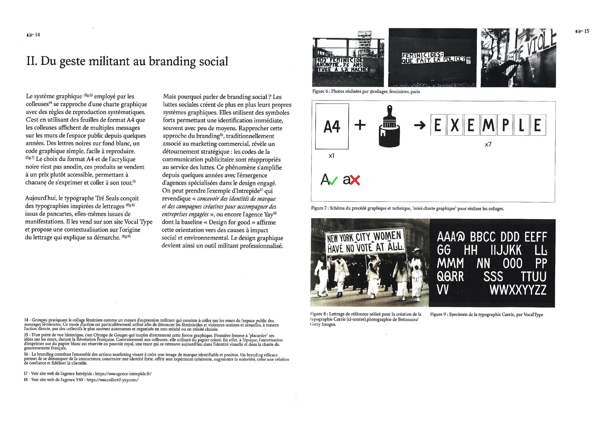
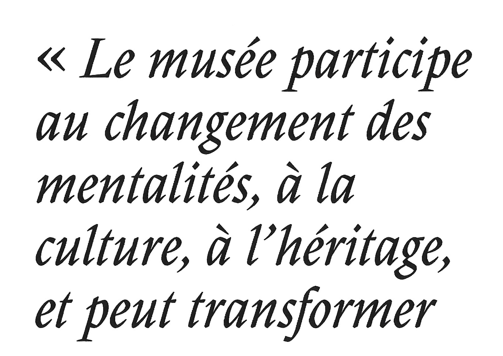

Ce mémoire explore les codes visuels militants féministes en France et vise à réfléchir à un nouveau langage graphique dédié à une institution culturelle portant sur la mémoire féministe. Pour ce faire, il analyse les stratégies utilisées par les institutions traitant de sujets mémoriels, opérant souvent une grande distanciation dans leur identité visuelle. Cela induit qu'il existe une tension entre le sujet militant et le prisme institutionnel à travers lequel il sera traité. Il s'agit d'explorer les modalités d'un design capable de porter la mémoire des luttes sans les neutraliser, et de proposer des pistes pour une esthétique institutionnelle qui ne trahisse pas la nature politique de son sujet. Cette recherche interroge donc la possibilité de concevoir une identité visuelle qui puisse concilier ces deux dimensions apparemment contradictoires : comment préserver la puissance contestataire et l'énergie graphique des mouvements féministes tout en répondant aux codes de légitimité et de pérennité propres aux institutions culturelles ?



